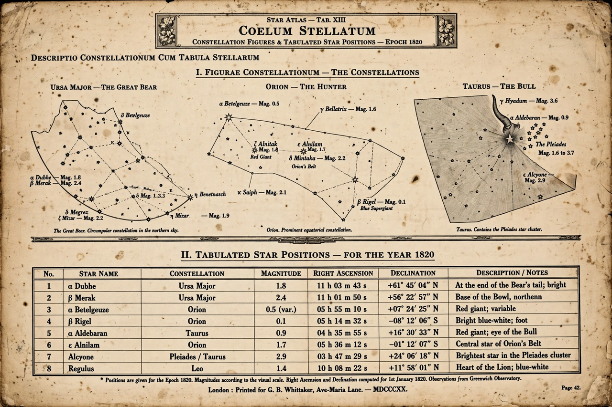

Star catalogue
A star catalogue is an astronomical catalogue that lists stars, typically giving their positions (right ascension and declination), magnitudes, spectral types, proper motions and cross-references. Star catalogues have been compiled since antiquity and remain fundamental reference tools in astronomy.

Historical catalogues
- Hipparchus / Ptolemy's Almagest — ~1,000 stars, 2nd century CE
- Tycho Brahe's catalogue (c. 1600) — unmatched pre-telescope accuracy
- Flamsteed's Historia Coelestis Britannica (1725)
- Bonner Durchmusterung (1859–1903) — over 450,000 stars
Modern catalogues
The Henry Draper Catalogue (HD numbers, with spectral types), the Bright Star Catalogue (HR), the Hipparcos Catalogue (from ESA's 1989–93 astrometry satellite) and the Gaia mission's data releases — cataloguing well over a billion stars with precise positions and parallaxes — represent the modern state of the art. Catalogues are also used in navigation, notably through the Nautical Almanac.